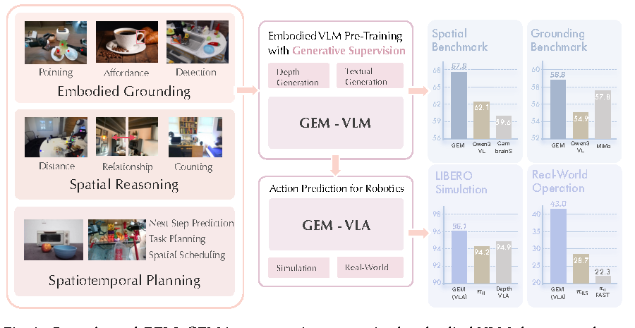
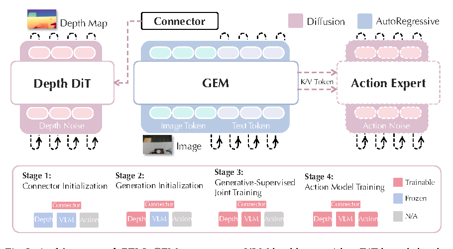
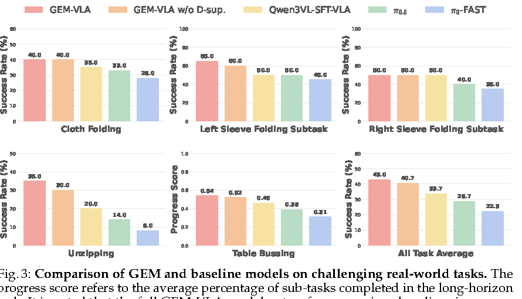
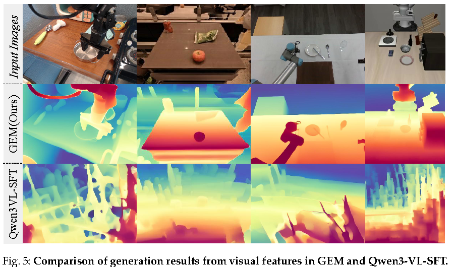

一句话总结
GEM 的核心不是为了生成漂亮的深度图，而是用 depth generation 这个任务反向塑造 VLM 的 visual tokens， 让它们更包含距离、结构、几何关系等 embodied manipulation 需要的物理信息。
论文要解决的问题
现有 Embodied VLM / VLA 的预训练大多依赖 VQA、caption 或 instruction tuning。 这些监督很擅长提升语义理解，但不一定让模型学到低层几何结构。机器人真正执行任务时， 只知道“杯子在桌上”不够，还要知道物体距离、前后关系、可抓取位置、局部形状和动作后果。
- 语义强，几何弱：普通 VLM final-layer visual tokens 更偏语义，不一定保留精细空间结构。
- 物理先验注入太晚：一些 VLA 在下游动作模型中再补 3D/2.5D 信息，和 VLM 预训练表示割裂。
- RGB 生成不够对齐：RGB reconstruction 会学纹理和颜色，但机器人更需要距离和空间关系。

创新点怎么理解
Depth as generative supervision
不是用 RGB reconstruction，而是生成 depth map。Depth 更直接编码距离、遮挡、前后关系和几何布局，与具身操作需求更一致。
Hybrid AR-Diffusion design
保留 autoregressive VLM 做语言理解，再接 DiT depth head 做生成式监督，让理解模型和生成监督共用视觉表示。
Progressive training
先对齐 connector，再 warm up depth head，最后联合训练，避免生成 head 与 VLM backbone 一开始互相干扰。
From GEM to GEM-VLA
把经过几何监督塑造的 GEM 表示接入 action expert，用 flow matching 生成连续动作，检验表征是否真的能迁移到机器人执行。
GEM 和 LVDrive 的共同点是：生成任务不是最终目的，而是 representation shaping。 GEM 用 depth 塑造几何表征，LVDrive 用 future latent 塑造规划表征。
核心方法总览

图像 o + 语言指令 l
↓
VLM backbone Mθ
↓
final-layer visual tokens ho
↓
connector Cϕ
↓
condition c
↓
DiT depth generator Gψ
↓
depth map generation supervision3.1 Architecture
普通 VLM 给定视觉输入 o 和语言指令 l，由 backbone
Mθ 输出最终层 multimodal token 表示：
h = (ho, hl) = Mθ(o, l)
其中 ho 是 visual tokens，hl 是 language tokens。普通 SFT 主要优化文本生成：
LCE = - Σ log pθ(yi | y<i, ho, hl)
这个目标可以让 visual tokens 对齐语言语义，但不保证它们保存物体深度、距离和几何结构。
GEM 因此加入 depth generative objective：把 ho 送入 connector 得到条件向量
c = Cϕ(ho)，再让 DiT depth head Gψ 在该条件下生成 depth map。
Lflow = E || vt(xt, c) - ut(xt | d) ||²
这里的 xt 是带噪 depth 状态，d 是 ground-truth 或 pseudo depth map。
Flow matching 训练 DiT 学一个 vector field，把 noisy depth distribution 变成目标 depth。
3.2 Progressive Training Recipe
作者强调不能直接端到端混训，因为 VLM hidden space 和 DiT input space 之间有 gap， 生成任务可能干扰语言理解模型。因此 GEM 分三阶段训练：
Connector Initialization
冻结 VLM 和 DiT，只训练 connector，用 Lflow 做初步 feature alignment。
Generative Head Initialization
冻结 VLM，训练 connector + DiT head，让 depth generator 适应 VLM 条件特征。
Joint Training
解冻可训练模块，同时优化 LCE + λLflow，让语义理解和结构生成协同。
Action Model Training
扩展到 GEM-VLA，训练 action expert，把几何增强后的表征迁移到连续动作生成。
Ltotal = LCE + λLflow, λ = 0.13.3 GEM-4M Dataset
GEM-4M 是一个大规模 embodied pre-training dataset。它不是简单堆 VQA， 而是围绕 grounding、spatial reasoning 和 planning 组织数据。
- Embodied Grounding：约 1M QA pairs，覆盖 open-vocabulary detection、instruction localization、affordance recognition。
- Physical / Spatial Reasoning：整合 MindCube、ViCA、SPAR、VSI-590K、RoboVQA、Robo2VLM、RefSpatial 等，强化距离、3D 关系和时空推理。
- Spatiotemporal Planning：从机器人视频中构造 sub-task / trajectory planning QA，约 50K samples。
3.4 Expanding to GEM-VLA
GEM-VLA 在 GEM backbone 上接入 DiT-based action expert Aω。
它从 backbone attention blocks 中提取 multimodal observation history 的 K/V tokens，
作为 action expert 的条件表示 cact。
Laction = E || vt(at, cact) - ut(at | a) ||²
Ltotal = Laction + λLflow也就是说，动作专家不仅学习 ground-truth action chunk，还继续保留 depth generative supervision。 作者的假设是：几何结构监督可以让 action prediction 更稳定，尤其在 deformable object 和 long-horizon tasks 中。
实验结论
Embodied reasoning
| Model | VSI-Bench All ↑ | MMSI-Bench All ↑ | EmbSpatial All ↑ |
|---|---|---|---|
| Qwen3-VL-2B-SFT | 60.0 | 28.9 | 72.7 |
| GEM-2B | 62.8 | 30.6 | 73.0 |
| Qwen3-VL-8B-SFT | 68.6 | 32.8 | 78.3 |
| GEM-8B | 70.6 | 35.3 | 79.4 |
重点是：GEM 相比同源 Qwen3-VL-SFT 版本继续提升，说明收益不只是来自额外 SFT 数据， depth generative supervision 有额外贡献。
LIBERO simulation
| Model | Spatial | Object | Goal | Long | Average ↑ |
|---|---|---|---|---|---|
| π0 reported | 96.8 | 98.8 | 95.8 | 85.2 | 94.2 |
| DepthVLA | 96.4 | 98.0 | 95.8 | 89.2 | 94.9 |
| Qwen3VL-SFT-VLA | 97.2 | 98.4 | 95.6 | 88.4 | 94.9 |
| GEM-VLA | 99.0 | 98.8 | 97.1 | 89.3 | 96.1 |
Real-world operation

论文报告 All Task Average 中 GEM-VLA 为 43.0，高于 π0.5 的 28.7 和 π0-FAST 的 22.3。 去掉 depth supervision 后，多个任务性能下降，支撑 depth supervision 对操作能力的贡献。
消融实验怎么读
| Setting | CV-Bench All ↑ | VSI Abs.Dist. ↑ | VSI Rel.Dist. ↑ | VSI All ↑ | RoboSpatial All ↑ |
|---|---|---|---|---|---|
| RGB Supervision | 80.9 | 47.5 | 62.8 | 60.0 | 44.6 |
| Direct End-to-End Co-Training | 79.7 | 42.1 | 60.0 | 57.6 | 44.0 |
| Default GEM | 81.1 | 47.8 | 65.2 | 63.0 | 48.9 |
这个表支撑两个关键 claim：depth 比 RGB 更适合作为空间监督；progressive training 比 direct end-to-end co-training 更稳定。

局限与疑问
- 算力门槛高：VLM 预训练使用 32 张 A800；真实 VLA 任务微调用 8 张 A800。
- 伪深度依赖强：部分数据用 DepthAnythingv3 生成 pseudo depth，监督质量会影响结论。
- 数据构建复杂：GEM-4M 依赖多源数据、SAM3、CoTracker3、Qwen3 等自动标注流程。
- 真实任务范围有限：真实机器人验证主要集中在 cloth folding、unzipping、table bussing。
- “物理知识”表述要谨慎：更稳妥的说法是 visual tokens 更包含几何/结构信息。
对 AD + World Model 的启发
GEM 虽然不是自动驾驶论文，但它对 AD world model 很有启发：生成监督的价值不在于生成结果本身， 而在于选择一个和下游决策强相关的结构目标来塑造 representation。
Robotics manipulation: depth supervision -> geometry-aware visual tokens
Autonomous driving: BEV / occupancy / future latent -> planning-aware scene tokens- 不要盲目做 RGB future generation；先问下游动作真正需要什么结构信息。
- 生成 head 和理解 backbone 的空间不天然对齐，progressive training 或 two-stage design 很重要。
- 普通组可以做轻量实验：冻结 backbone，比较 depth / occupancy / BEV / future latent 哪种监督更适合规划。